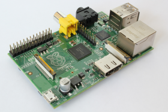

Raspberry Pi
 | |
| Entwickler: | Raspberry Pi Foundation |
| CPU: | ARM1176JZF-S |
| GPU: | Broadcom VideoCore IV |
| Hardware: | Ethernet, Kartenleser, 256-512MB RAM, USB, HDMI |
| Homepage | |
Der Raspberry Pi ist ein kreditkartengroßer Computer, der von der Raspberry Pi Foundation entwickelt wurde und wird. Er basiert auf einem ARM-Prozessor und bietet, je nach Modell, zusätzlich USB, Ethernet, SD-Slots uvm.
Des Weiteren ist der Raspberry Pi zudem sehr günstig (B-Variante ohne MwSt. 35 US-$), was ihn für Interessierte noch attraktiver macht.
Inhaltsverzeichnis
Bedeutung für OS-Entwickler
Der Raspberry Pi ist eine sehr interessante Plattform für OS-Entwickler:
Normale PCs sind heute aus sehr vielen verschiedenen Bauteilen zusammengesetzt - so gibt es jährlich neue Grafikkartenserien und Prozessoren, und es gibt unzählige weitere Bauteile, die ein PC-Nutzer verbauen kann. Es ist für Hobby-OS-Entwickler unmöglich, für all jene Geräte Treiber zu schreiben. Der Raspberry Pi dagegen ist eine Plattform, den es "nur" in 2 Ausführungen gibt - einer A-Variante und einer erweiterten B-Variante. Natürlich gibt es auch hier immer wieder kleinere Veränderungen, was die Bestückung betrifft, jedoch kann man diese Änderungen leicht nachvollziehen und sein OS einfach nachrüsten, sodass man (fast) die gesamte Hardware unterstützen kann (abgesehen von eigenen Erweiterungen; s.u.).
Des Weiteren ist der Raspberry Pi einer der wenigen Rechner auf ARM-Basis zu für Privatpersonen erschwinglichen Preisen. Üblicherweise sind diese entweder sehr teuer oder als eingebettete Systeme implementiert, sodass deren Programmierung mangels Schnittstellen zum Benutzer üblicherweise eher langweilig ist.
Technik
Der Raspberry Pi ist 85,60 mm × 53,98 mm × 17 mm groß. Er besitzt als CPU einen ARM1176JZF-S mit 700 MHz und sogar eine eigene GPU, nämlich den Broadcom VideoCore IV. Beide Ausführungen verfügen außerdem über einen HDMI- sowie einen Composite Video-Ausgang. Ton wird entweder über HDMI oder separat über Klinke (3,5 mm) ausgegeben.
Eine Festplatte ist nicht verbaut, dafür gibt es einen Kartenleser für SDHC-, SDXC-, MMC- und SDIO-Karten. Es existieren noch einige GPIO-Ports für eigene Erweiterungen (s.u.). Mit Strom wird der Rechner wahlweise über Batterien oder einen MicroUSB-Port versorgt.
Unterschiede zwischen den Modellen A und B
Während die A-Variante mit 256 MB auskommen muss, wurden der B-Variante in der aktuellen Version 512 MB spendiert. Über USB-Anschlüsse verfügen beide Modelle, jedoch hat die B-Variante einen Hub integriert, der einen weiteren USB-Anschluss zulässt (der auch verbaut wurde). Die B-Variante besitzt zudem einen Ethernet-Controller, benötigt dafür aber insgesamt auch 3,5 Watt im Gegensatz zu 2,5W beim A-Modell.
Eigene Erweiterungen
Der Raspberry Pi verfügt über eine Schnittstelle, mit der man eigene Hardware anbauen kann (z.B. eine Platine mit Temperatursensoren). Elektrotechnisch interessierte können somit also - anders als bei handelsüblichen PCs - eigene Bauteile entwerfen, für die man dann sogar die Unterstützung im eigenen Betriebssystem einbauen kann.
Prozessor
Beim Prozessor handelt es sich um einen ARM Prozessor, der so oder ähnlich auch in Handies vorkommt:
pi@raspberrypi:~ $ uname -m armv6l
Die Main-Routine eines C-Programms, welches nur mittels printf hello world ausgibt, sieht so aus:
00010408 <main>:
10408: e92d4800 push {fp, lr}
1040c: e28db004 add fp, sp, #4
10410: e59f000c ldr r0, [pc, #12] ; 10424 <main+0x1c>
10414: ebffffb3 bl 102e8 <printf@plt>
10418: e3a03000 mov r3, #0
1041c: e1a00003 mov r0, r3
10420: e8bd8800 pop {fp, pc}
10424: 00010498 .word 0x00010498
Man erkennt die feste Befehlsbreite - jeder Maschinensprachenbefehl ist 4 Bytes lang.